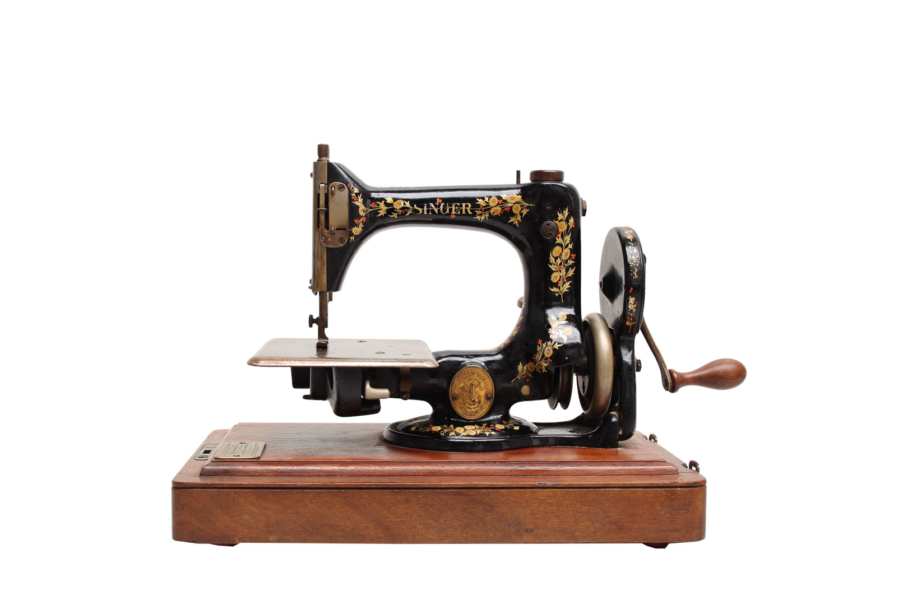
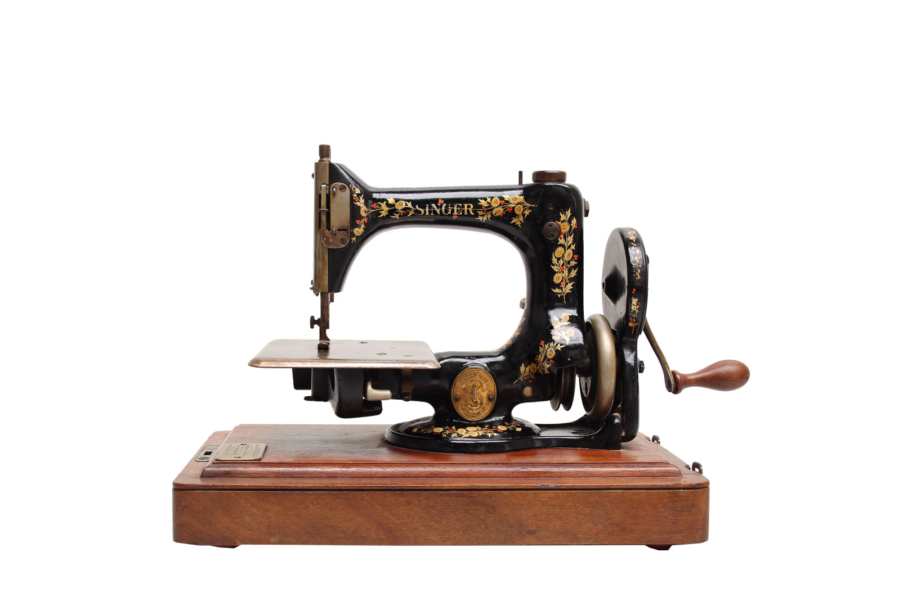

Singer Automatic Model 24
The Model 24 is our simplest, strongest and most user-friendly design. This machine allows for faster sewing with less fuss and more working room under the arm than ever before. Whether for home or commerical use, this machine is a must have for the modern seamstrist. This machine is ready for use as soon as the needle is threaded!
Features
- Chain-stitch mechanism: No need for shuttle or bobbin
- Automatic Tension Control: Machine does the work for you
- Smooth and Light-running: Less fatigue while operating by hand or treadle
- Large Working Space Under Arm: No more fussing with bulkly fabric and hems
- Strongest Chain-stitch of Its Kind: Durable and unravel resistant stitch
- Durable Construction: Our machines are built to last
This is a machine you can feel good investing in and will last you many years to come!
 
